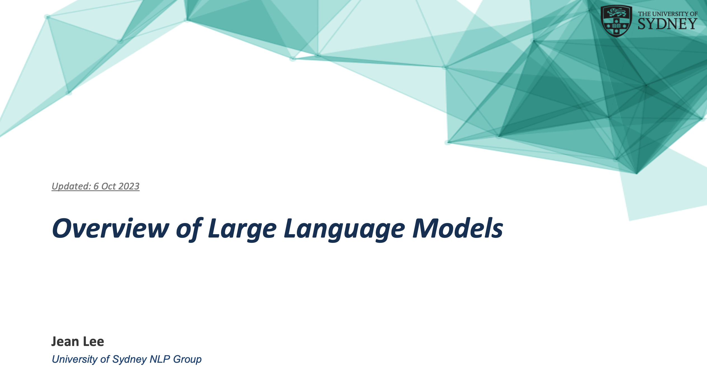

Overview of Large Language Models.
Part 1 - Background, Techniques, and Evolutionary Trends
Jean Lee is a Ph.D. candidate at the School of Computer Science of the University of Sydney supervised by Dr. Caren Han and Dr. Josiah Poon. Her research interests include Natural Language Processing and AI applications in business and finance. Her research has been published in top-tier conferences (e.g. ACL, SIGIR, COLING, AAAI), and she has participated in various research workshops as a tutor/mentor (e.g. GoogleExploreCSR, NVIDIA LLM Bootcamp). Additionally, Jean has served in several roles at international conferences, including student volunteer chair, workshop organizer, and reviewer (e.g. IJCAI, AJCAI, ICPR, EMNLP). Based on her successful research progress, she was selected as a recipient of the Research Training Program (RTP) Scholarship awarded by the Australian Government. She graduated with a Master's Degree in Data Science from the University of Sydney and previously received an MBA from Seoul National University. Prior to academia, Jean has passed the U.S Uniform Certified Public Accountancy Examination (a.k.a. AICPA) and worked in management consulting firms (e.g. Accenture and KPMG) as well as startup industries.
Part 1 - Background, Techniques, and Evolutionary Trends
Large language models (LLMs), like ChatGPT, have showcased remarkable capabilities in addressing various natural language processing (NLP) tasks, attracting significant attention across diverse domains. In this talk, I provided an overview of LLMs, including their background, techniques, and evolutionary trends. In the upcoming Part 2, I will summarize evaluation methods and applications of LLMs.
order by date descending
Accepted by ACL 2024.
...designed to leverage insights from both fine-grained and coarse-grained levels by facilitating a nuanced correlation between token and entity representations, addressing the complexities inherent in form documents. Additionally, we introduce new inter-grained and cross-grained loss functions to further refine...
Preprint. Under review.
...Despite the extensive research into general-domain LLMs, and their immense potential in finance, Financial LLM (FinLLM) research remains limited. This survey provides a comprehensive overview of FinLLMs, including their history, techniques, performance, and opportunities and challenges...
Accepted by AAAI 2023 Bridge.
Paper | Github | PaperWithCode
...a new dataset for detecting emotions in the stock market that consists of 10k English comments collected from StockTwits. Inspired by behavioral finance, it proposes 12 fine-grained emotion classes that span the roller coaster of investor emotion. Unlike existing financial sentiment datasets, StockEmotions presents granular features such as investor sentiment classes, fine-grained emotions, emojis, and time series data....
Accepted by COLING 2022.
Paper | Presentation | Github
Online Hate speech detection has become important with the growth of digital devices, but resources in languages other than English are extremely limited. We introduce K-MHaS, a new multi-label dataset for hate speech detection that effectively handles Korean language patterns. The dataset consists of 109k utterances from news comments and provides multi-label classification...
Accepted by ACL-IJCNLP 2021.
Paper | Presentation | Github
Traditional toxicity detection models have focused on the single utterance level without deeper understanding of context. We introduce CONDA, a new dataset for in-game toxic language detection enabling joint intent classification and slot filling analysis, which is the core task of Natural Language Understanding. We propose a robust dual semantic-level toxicity framework...
Accepted by SIGIR 2021.
Paper | Presentation | Demo | Github
The Federal Reserve System plays a significant role in affecting monetary policy and financial conditions worldwide. ...we present FedNLP, an interpretable multi-component Natural Language Processing system to decode Federal Reserve communications. This system is designed for end-users to explore how NLP techniques can assist their holistic understanding of the Fed's communications with NO coding...
Worked/working as a Casual Academic (TA, RA) at the University of Sydney in following units and workshops: Award Recipient for Outstanding Achievement in Teaching - Feedback for Teaching (FFT) Student Survey (2023)
Leveraging with my working experience and data science skills, my goal is to pursue my research career in AI specialising in NLP. The summary of my career prior to academia is below:
| Company | Position, Department | Period |
|---|---|---|
| University of Sydney | Casual Academic | Computer Science, Business | Jan. 2021 - Present |
| EDWY (startup) | Director & Co-Founder | Jul. 2016 - Apr. 2022 |
| Accenture | Consultant | Strategy | Mar. 2012 - Feb. 2014 |
| KPMG | Consultant | Climate Change & Sustainability | Jul. 2011 - Sep. 2011 |
| Industrial Bank of Korea | Assistant Manager | Regional Headquarters | Feb. 2006 - Jun. 2011 |
The Data Science Projects on my portfolio will be updated soon.